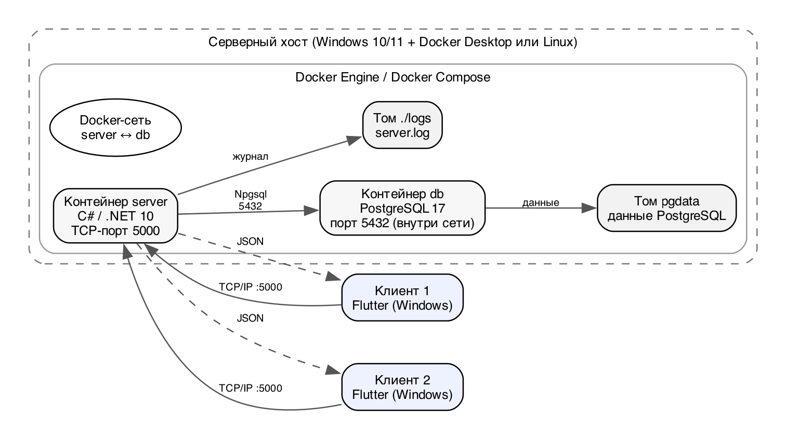

Руководство администратора
Министерство науки и высшего образования Российской Федерации
Автономная некоммерческая организация профессиональная
образовательная организация Московский международный колледж
цифровых технологий «Академия ТОП»
Факультет Информационных систем и программирования
Кафедра Разработка программного обеспечения
| СОГЛАСОВАНО Руководитель проекта от кафедры, преподаватель _________ /Д. В. Золотухин / «___» ____________ 2026 г. | УТВЕРЖДАЮ Заведующий выпускающей кафедрой ________ / И. О. Фамилия / «___» ___________ 2026 г. |
|---|---|
РУКОВОДСТВО АДМИНИСТРАТОРА
на разработку программного комплекса
«Крестики и нолики»
Код документа: РА.001.2026
| Листов: 11 | Исполнители (разработчики): Студенты группы 9/3 – РПО 24/2 __________ / К. Д. Бызов/ «11» ноября 2026 г. |
|---|---|
МОСКВА — 2026 г.
1. Назначение и роли
Руководство администратора предназначено для специалиста, который развёртывает и сопровождает серверную часть программного комплекса «Крестики и нолики». Сервер и PostgreSQL работают в Docker-контейнерах; администратор управляет стеком через Docker Compose, командную строку сервера и клиент PostgreSQL.
В версии 1.0 отдельная панель администратора не предусмотрена. Управление выполняется через конфигурацию Docker Compose, команды docker compose, учётные записи PostgreSQL и журналы контейнера. Игровые сессии создаются игроками; администратор не вмешивается в ход партии, кроме остановки сервера или блокировки учётной записи.
Схема развёртывания: контейнер server и контейнер db находятся в одной Docker-сети; наружу опубликован только TCP-порт 5000 сервера. Клиенты подключаются к этому порту по локальной сети.
Схема приведена на рисунке 1.

Рисунок 1 — Схема развёртывания программного комплекса
2. Требования к серверу
Данные приведены в таблице 1.
Таблица 1 — Требования к серверу
| Компонент | Требование |
|---|---|
| Docker | Docker Engine 24+ и Docker Compose v2 (Docker Desktop, colima или Docker Engine на Linux) |
| Процессор | Не менее 2 ГГц |
| Оперативная память | Не менее 4 ГБ (рекомендуется 8 ГБ для Docker) |
| Свободное место | Не менее 3 ГБ для образов Docker, тома pgdata и резервных копий |
| Сеть | TCP/IP, статический адрес или разрешимое имя, опубликованный порт 5000 |
| Клиентские ПК | Windows 10/11 с Flutter-клиентом |
3. Развёртывание
Порядок развёртывания:
-
Установить Docker Engine и Docker Compose v2.
-
Получить каталог проекта с файлами docker-compose.yml и server/.
-
При необходимости изменить пароли и порт в docker-compose.yml.
-
Выполнить docker compose up -d --build.
-
Проверить состояние контейнеров и журнал сервера.
-
Разрешить входящий TCP-порт 5000 в межсетевом экране хоста.
Основные параметры приведены в таблице 2.
Таблица 2 — Параметры развёртывания
| Параметр | Значение по умолчанию | Назначение |
|---|---|---|
| TTT_PORT | 5000 | Порт сервера внутри контейнера |
| TTT_DB_HOST | db | Имя сервиса PostgreSQL в Docker-сети |
| TTT_DB_PORT | 5432 | Порт PostgreSQL |
| TTT_DB_NAME | ttt | Имя базы данных |
| TTT_DB_USER | ttt | Пользователь базы данных |
| TTT_DB_PASSWORD | ttt | Пароль пользователя базы данных |
| TTT_LOG_FILE | /app/logs/server.log | Файл журнала сервера |
| pgdata | том Docker | Данные PostgreSQL |
Пароль по умолчанию ttt предназначен только для локального запуска. Перед эксплуатацией в сети смените пароль в docker-compose.yml и в параметрах подключения.
4. Запуск, остановка и журналы
Основные команды выполняются из корня проекта:
docker compose up -d --build # запуск и сборка
docker compose ps # состояние контейнеров
docker compose logs -f server # журнал сервера
docker compose restart server # перезапуск сервера
docker compose stop # остановка без удаления
docker compose down # остановка и удаление контейнеров
Данные PostgreSQL сохраняются в томе pgdata и не удаляются при docker compose down. Команда docker compose down -v удаляет и том — использовать только при полном сбросе.
Контейнер db имеет healthcheck pg_isready. Контейнер server запускается только после того, как база стала здоровой.
5. Управление учётными записями
Учётные записи создаются администратором. Пароль хранится в виде хеша с солью; открытый пароль не сохраняется. Команды выполняются через одноразовый контейнер сервера.
Данные приведены в таблице 3.
Таблица 3 — Операции с учётными записями
| Операция | Команда | Результат |
|---|---|---|
| Создание | docker compose run --rm server --create-user player5 | Запись в Users и UserProfiles |
| Блокировка | docker compose run --rm server --block-user player5 | Пользователь не может войти |
| Разблокировка | docker compose run --rm server --unblock-user player5 | Вход разрешён |
| Сброс пароля | docker compose run --rm server --reset-password player5 | Новый пароль задаётся интерактивно |
Для неинтерактивного создания пользователя в скрипте используйте docker compose run --rm -T server --create-user login и передайте пароль и никнейм через стандартный ввод.
6. База данных
Схема создаётся автоматически при первом запуске сервера. Подключение к PostgreSQL:
docker compose exec db psql -U ttt -d ttt
Порт 5432 не публикуется на хост: доступ к базе возможен только из Docker-сети или через docker compose exec. Поверхность атаки при этом меньше.
Основные таблицы: Users, UserProfiles, GameSessions, GameResults, ChatMessages. Целостность обеспечивается первичными и внешними ключами.
7. Резервное копирование и восстановление
Резервная копия базы данных:
docker compose exec -T db pg_dump -U ttt -d ttt -F c > backup.dump
Восстановление:
Проверка копии выполняется на отдельной базе ttt_restore:
docker compose exec -T db createdb -U ttt ttt_restore
docker compose exec -T db pg_restore -U ttt -d ttt_restore -c < backup.dump
docker compose exec -T db dropdb -U ttt ttt_restore
Рекомендуемый график приведён в таблице 4.
Таблица 4 — График резервного копирования
| Периодичность | Что копируется | Срок хранения |
|---|---|---|
| Ежедневно | База данных (pg_dump) | 14 дней |
| Еженедельно | Полная копия базы и docker-compose.yml | 3 месяца |
| Перед обновлением | База данных и конфигурация | До следующего обновления |
Копии хранятся на другом носителе или сетевом ресурсе. Раз в месяц проверяется восстановление на тестовой базе.
8. Безопасность
– сменить пароль PostgreSQL по умолчанию;
– не публиковать порт 5432 на хост;
– ограничить доступ к порту 5000 доверенной локальной сетью;
– не передавать доступ к Docker-сокету непривилегированным пользователям;
– регулярно обновлять образы PostgreSQL и .NET;
– хранить резервные копии отдельно от рабочего тома;
– проверять журналы на аномальное число ошибок авторизации;
– учитывать, что после пяти неудачных попыток вход по логину блокируется на 60 секунд.
Протокол приложения не использует TLS; передача данных защищена только изоляцией локальной сети. Для выхода за пределы доверенного сегмента требуется дополнительный защищённый туннель, что не входит в версию 1.0.
9. Диагностика
Данные приведены в таблице 5.
Таблица 5 — Типовые проблемы
| Симптом | Проверка | Действие |
|---|---|---|
| Контейнер server не запускается | docker compose logs server | Проверить конфигурацию и подключение к db |
| db не становится healthy | docker compose logs db | Проверить пароль, том и свободное место |
| Клиенты не подключаются | docker compose ps, порт 5000 | Проверить публикацию порта и межсетевой экран |
| Медленная работа | docker stats, свободное место | Выделить ресурсы, очистить журналы |
| Ошибка записи результата | docker compose logs server | Проверить права и состояние тома pgdata |
| Потеря данных | Том pgdata, резервные копии | Восстановить из копии, проверить том |
10. Обновление версии
-
Сделать резервную копию базы и сохранить docker-compose.yml.
-
Получить новую версию файлов проекта.
-
Выполнить docker compose up -d --build.
-
Проверить docker compose ps и журнал сервера.
-
Подключить тестового клиента и провести контрольную партию.
-
При ошибке вернуть предыдущие файлы и восстановить базу из копии.
После обновления проверяются авторизация, создание сессии, ход, чат и запись результата. Информация об изменениях заносится в формуляр.